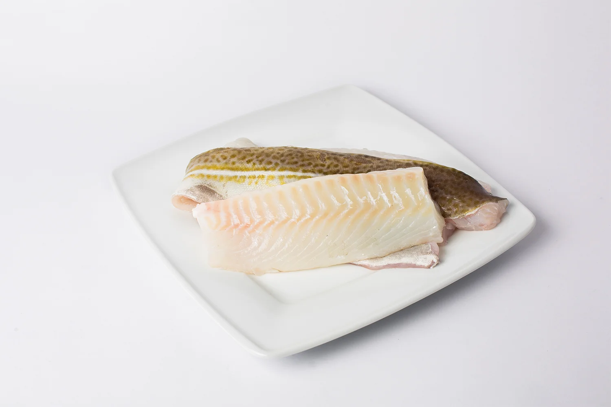
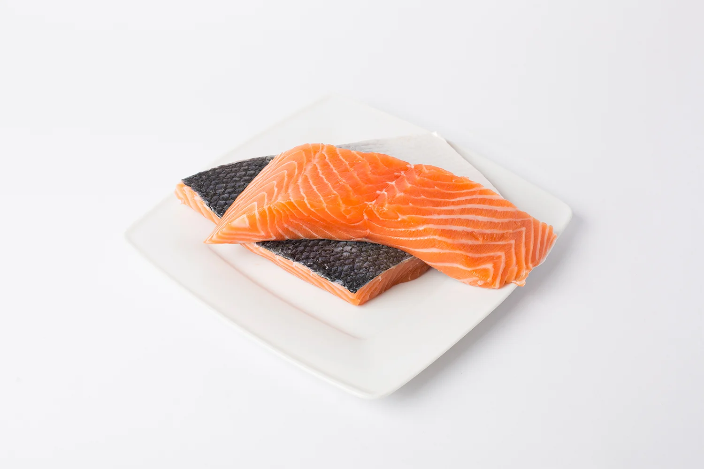
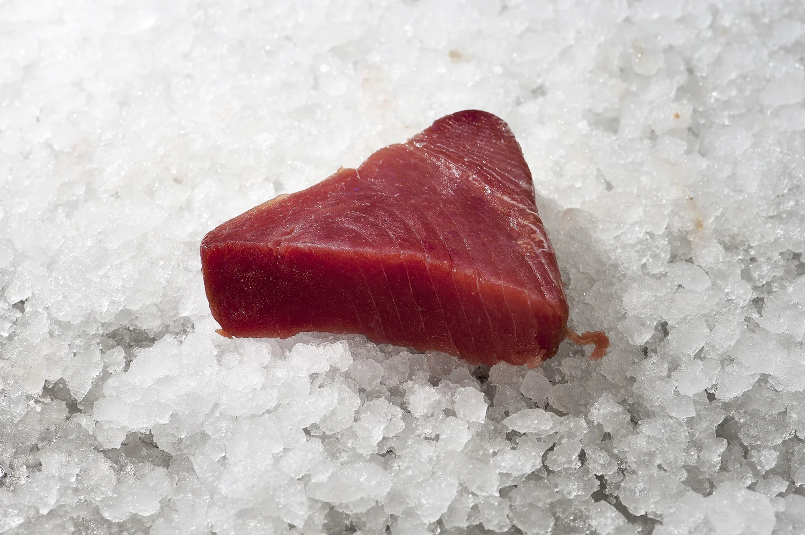
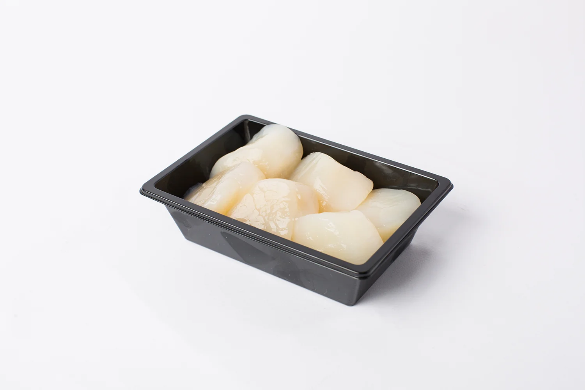
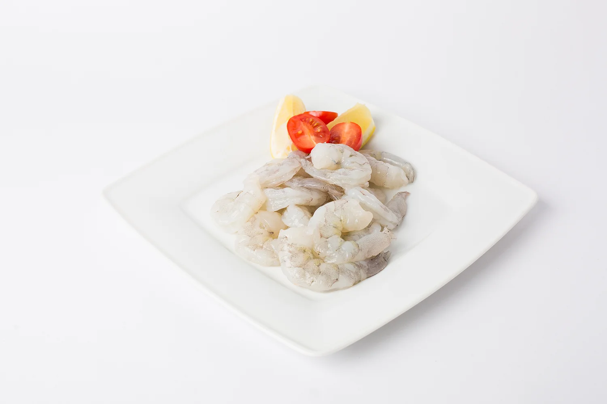

Kabeljauw
De kabeljauw is door onszelf vers gesneden en is een lekkere en magere vis, ideaal voor te koken of in de oven te doen
Dagprijs
De niet gekweekte verse vis wordt verantwoord en duurzaam gevangen en iedere ochtend van de afslag bij Scheveningen door ons geselecteerd.
Vanwege wisselende aanvoer of seizoensgebonden is niet alle verse vis altijd aanwezig. Staat er een vissoort niet bij die u wel graag wil hebben dan kunt u altijd bestellen (bij voorkeur 2 dagen van te voren).

De kabeljauw is door onszelf vers gesneden en is een lekkere en magere vis, ideaal voor te koken of in de oven te doen
Dagprijs

Wij selecteren dagelijks de beste en meest verse Zalm voor u. Onze Zalm is heerlijk om te bakken op de huid of als sashimi.
Dagprijs

Verse supermalse en eerlijke Tonijnfilet. Sashimi kwaliteit.
Dagprijs

Coquilles, lekker even kort grillen: een super (voor)gerechtje.
Dagprijs

Verse diepvriesgarnalen.
vanaf €1,95 p/100 gr
Geef uw bestelling twee dagen van tevoren door, wij maken 'm voor u klaar om op te halen aan de Buitenwatersloot.